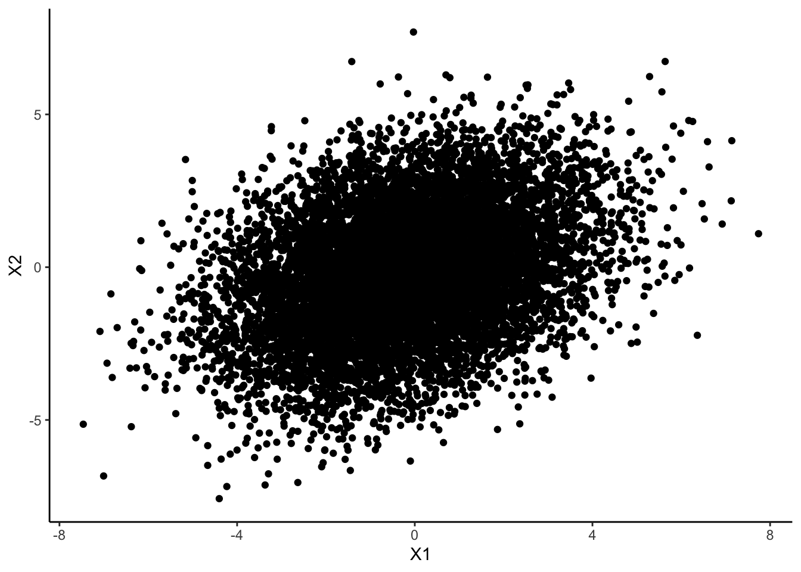
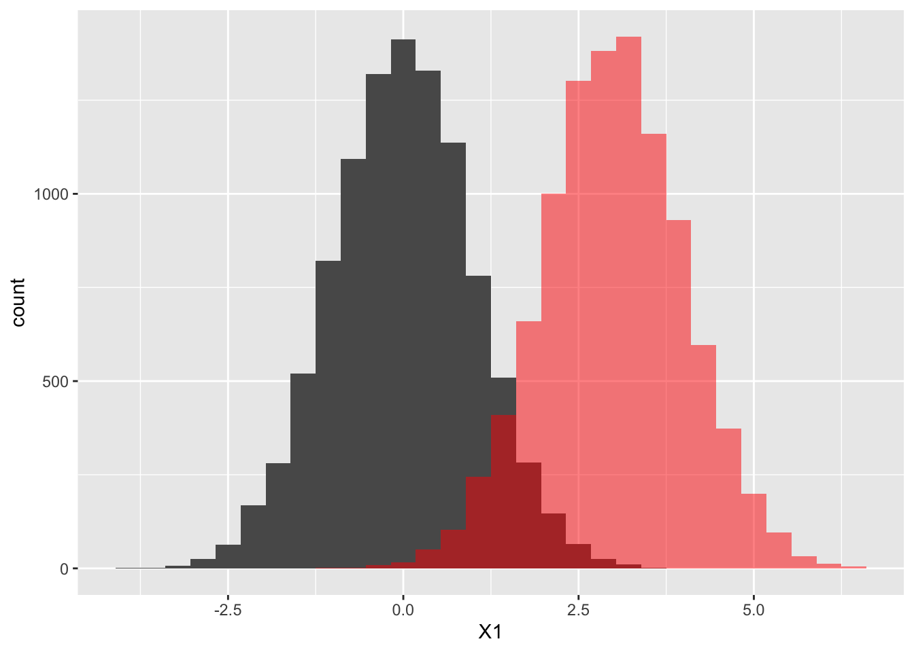
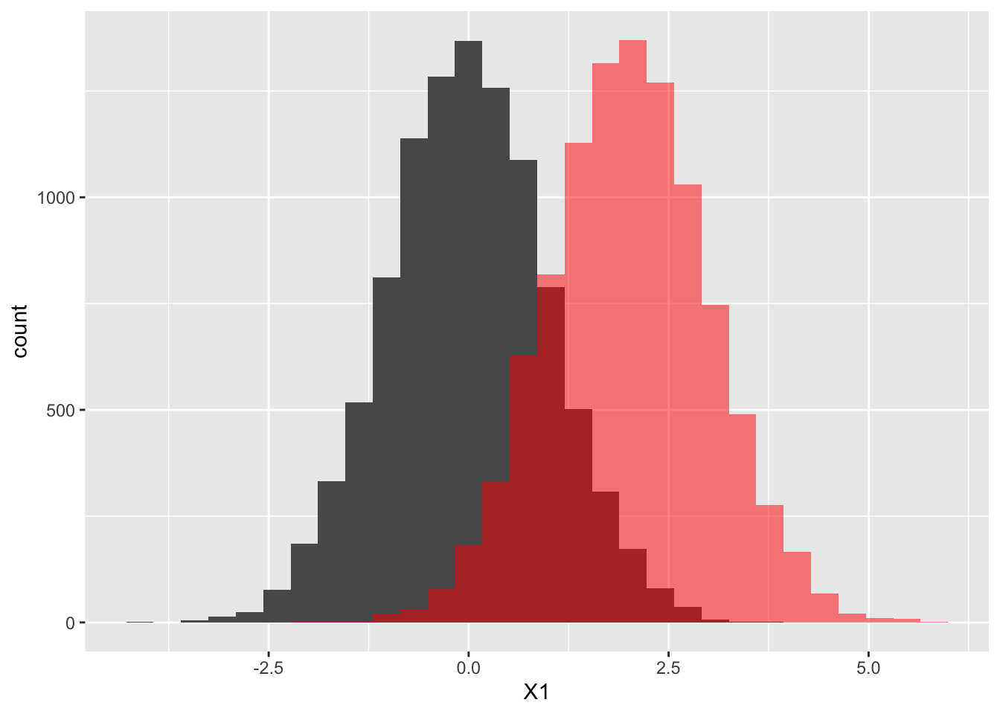
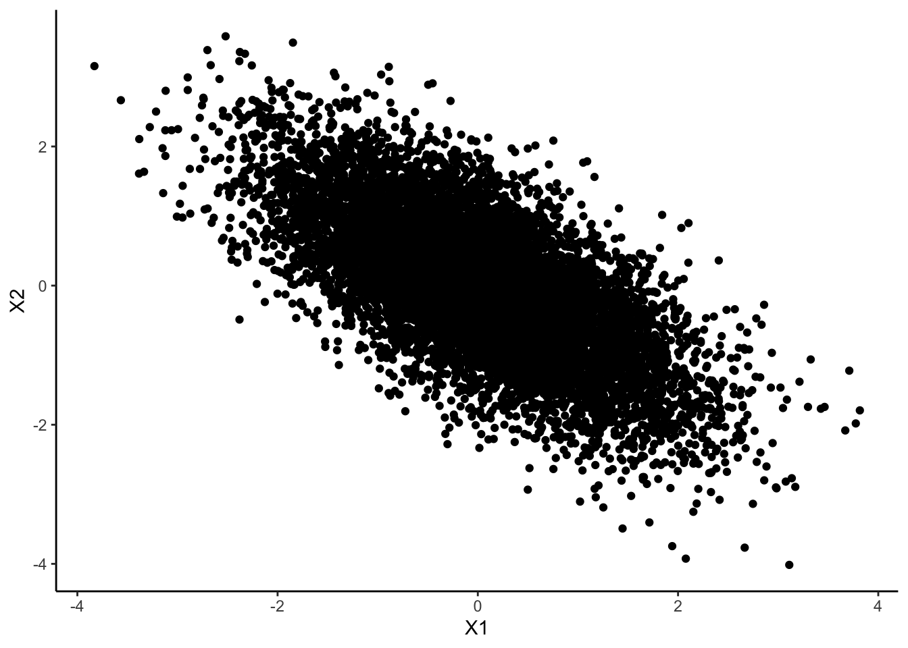

In this document, I’m trying to understand how to make continuous and categorical datasets that I can compare in a meaningful way with discriminant-based metrics and tree-based models.
library(sirt)
- sirt 3.13-228 (2023-08-11 08:28:44.188123)
library(psych)library(dplyr)
Attaching package: 'dplyr'
The following objects are masked from 'package:stats':
filter, lag
The following objects are masked from 'package:base':
intersect, setdiff, setequal, union
library(MASS)
Attaching package: 'MASS'
The following object is masked from 'package:dplyr':
select
library(ggplot2)
Attaching package: 'ggplot2'
The following objects are masked from 'package:psych':
%+%, alpha
xn yn zn
xn 1.0000000 1.0000000 0.7163387
yn 1.0000000 1.0000000 0.7163387
zn 0.7163387 0.7163387 1.0000000
tetrachoric2(data)$rho
x y z
x 1.0000000 0.9999900 0.7041004
y 0.9999900 1.0000000 0.7041004
z 0.7041004 0.7041004 1.0000000
cor(data)
x y z
x 1.0000000 1.0000000 0.4972353
y 1.0000000 1.0000000 0.4972353
z 0.4972353 0.4972353 1.0000000
But for larger datasets, tetrachoric is much more similar to the underlying normal distribution’s correlation matrix.
Insights about categorical-continuous comparison
So, I think that what we can do to make categorical datasets that are similar to our continuous datasets, for comparison purposes, is to create underlying m.v. normals, which we use for the continuous data, then threshold all of the variables (above 0 -> 1, below 0 -> 0) and use these thresholded values to be our categorical data. I would say this comparison is valid by evaluating the tetrachoric matrix of the categorical data, which generally matches the correlation matrix of the underlying m.v. normal data, because that’s what it is designed to do.
Making the datasets I want
For this project, there are a few different datasets I want to make to compare model types with. I’m going to try to make all of them here to see if the tetrachoric and correlation matrices are sort of matching what I think they should be. a) Confidential and synthetic dataset are drawn from (for continuous) multivariate normal with known variance-covariance matrix, and from (for categorical) known distribution. Control pairing to test which hyperparameters work best in continuous vs. categorical “ideal” setting.
generate_cat <-function(cont){matrix(as.numeric(cont>0), nrow =nrow(cont))}set.seed(1)n=10000# number of samplescorr=.7# correlationp =10# number of variablesvcov =matrix(corr, p, p) +diag(1-corr, p, p) # vcov matrix, p on all off-diagonal variablesmeans =rep(0,p) # mean vectorconf_cont1 =mvrnorm(means, vcov, n = n)synth_cont1 =mvrnorm(means, vcov, n = n)conf_cat1 =generate_cat(conf_cont1)synth_cat1 =generate_cat(synth_cont1)# comparing the variancescor(conf_cont1)
Confidential data are drawn from (for continuous) multivariate normal with known variance-covariance matrix, and from (for categorical) known distribution. Synthetic data are drawn from distribution with larger variances and slightly (~20%) off means.
vcov =matrix(corr, p, p) +diag(1-corr, p, p) # vcov matrix, p on all off-diagonal variablesmeans =rep(0,p) # mean vectorconf_cont1 =mvrnorm(means, vcov, n = n)means =sample(c(-.2,.2), 10, replace = T) # mean vectorvcov =matrix(2*corr, p, p) +diag(4-2*corr, p, p) # vcov matrix, p on all off-diagonal variablessynth_cont1 =mvrnorm(means, vcov, n = n)conf_cat1 =generate_cat(conf_cont1)synth_cat1 =generate_cat(synth_cont1)# comparing the variancescor(conf_cont1)
ggplot(data.frame(synth_cont1), aes(x = X1, y = X2))+geom_point()+theme_classic()

Confidential dataset is multivariate normal or has a known joint categorical distribution, and the synthetic dataset has a known mismatch in distributional coverage. One variable for the continuous dataset will be centered at a different value in the synthetic vs. confidential data, and one variable for the categorical dataset will have a drastically different distribution across categories in the synthetic vs. confidential data. Pairing to test whether methods are able to pick up this mismatch and on which types of datasets.
vcov =matrix(corr, p, p) +diag(1-corr, p, p) # vcov matrix, p on all off-diagonal variablesmeans =rep(0,p) # mean vectorconf_cont1 =mvrnorm(means, vcov, n = n)means[1] =3synth_cont1 =mvrnorm(means, vcov, n = n)conf_cat1 =generate_cat(conf_cont1)synth_cat1 =generate_cat(synth_cont1)# comparing the variancescor(synth_cat1)
`stat_bin()` using `bins = 30`. Pick better value with `binwidth`.
`stat_bin()` using `bins = 30`. Pick better value with `binwidth`.

In this section, we see that for the first time, the tetrachoric correlation matrix doesn’t match the correlation matrix of the underlying normal distribution. If we did the thresholding at 3 for X1, then the tetrachoric correlation matrix would match the underlying correlation matrix, but obviously now the synthetic and confidential datasets would be the same at this point because we’ve centered the 0’s and 1’s. So I’m not sure, in this pairing of datasets, how to make sure that the synthetic and confidential datasets have different means without affecting tetrachoric correlation. It seems to be most affected at the extremes of the data, so only when we make the mean of our incorrect variable really high (3) compared to standard deviation (1). I think to get around this, I’ll set the mean at 2.
vcov =matrix(corr, p, p) +diag(1-corr, p, p) # vcov matrix, p on all off-diagonal variablesmeans =rep(0,p) # mean vectorconf_cont1 =mvrnorm(means, vcov, n = n)means[1] =2synth_cont1 =mvrnorm(means, vcov, n = n)conf_cat1 =generate_cat(conf_cont1)synth_cat1 =generate_cat(synth_cont1)# comparing the variancescor(conf_cont1)
`stat_bin()` using `bins = 30`. Pick better value with `binwidth`.
`stat_bin()` using `bins = 30`. Pick better value with `binwidth`.

A relationship between two variables is reversed in the confidential vs. synthetic datasets. Pairing to test whether methods can pick up that there is an incorrect association between two variables.
vcov =matrix(corr, p, p) +diag(1-corr, p, p) # vcov matrix, p on all off-diagonal variablesmeans =rep(0,p) # mean vectorconf_cont1 =mvrnorm(means, vcov, n = n)vcov[1,2:p] =-rep(corr, p-1)vcov[2:p,1] =-rep(corr, p-1)synth_cont1 =mvrnorm(means, vcov, n = n)conf_cat1 =generate_cat(conf_cont1)synth_cat1 =generate_cat(synth_cont1)# comparing the variancescor(conf_cont1)
ggplot(data.frame(synth_cont1), aes(x = X1, y = X2))+geom_point()+theme_classic()

Not complete yet
A relationship between one variable and many other variables reverses and/or becomes more random at specific values of the variable. The categorical confidential data will generally match the synthetic data less for a specific category in a certain categorical variable, while the continuous confidential data will generally match the synthetic data less as one of the continuous variables gets smaller. This pairing tests which models might be able to be used to identify when a specific subgroup of the population has synthetic data of lower utility than the rest of the population.
vcov =matrix(corr, p, p) +diag(1-corr, p, p) # vcov matrix, p on all off-diagonal variablesmeans =rep(0,p) # mean vectorconf_cont1 =mvrnorm(means, vcov, n = n)vcov[1,2:p] =-rep(corr, p-1)vcov[2:p,1] =-rep(corr, p-1)synth_cont1 =mvrnorm(means, vcov, n = n)conf_cat1 =generate_cat(conf_cont1)synth_cat1 =generate_cat(synth_cont1)# comparing the variancescor(conf_cont1)